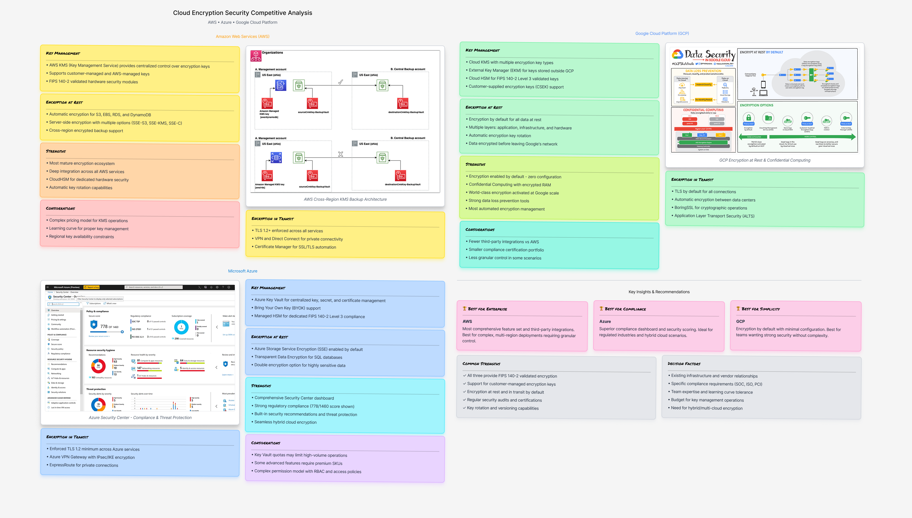
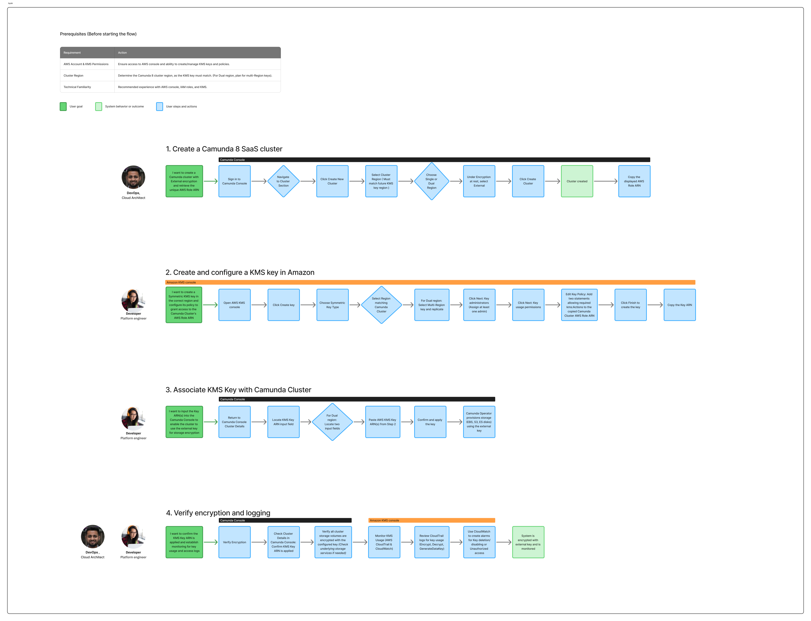
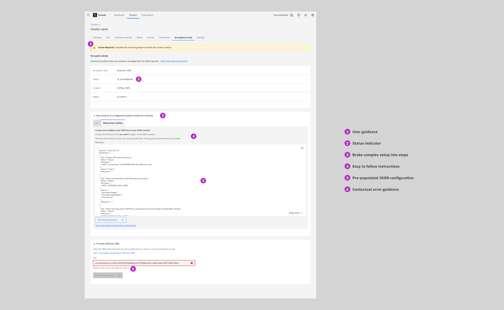
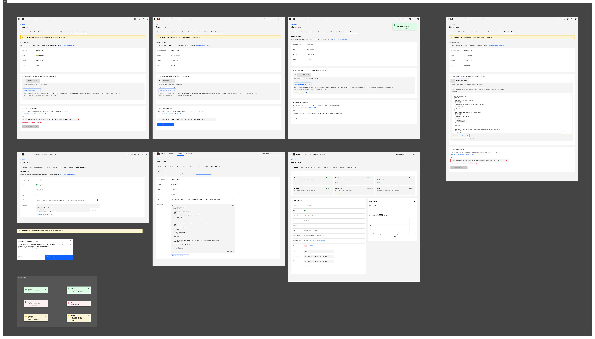
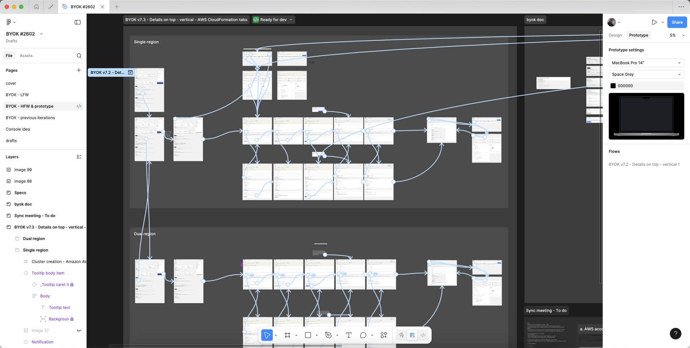

How did I design a security feature that achieved an 85% enterprise adoption rate, a 40% reduction in support tickets, and a 30% decrease in misconfigured deployments?

Project Context
This project aimed to implement the "Bring Your Own Encryption Key" (BYOEK) functionality, which allows enterprise customers to maintain control of their encryption keys while using our platform services.
The Problem
Enterprise security requirements were hindering significant sales opportunities. Potential customers needed customer-managed encryption keys (BYOEK) to close deals, but our platform lacked a native solution.
Key Issues Identified:
- No customer-managed encryption option for at-rest data
- Existing encryption solutions had minimal visibility and control
- Risk that implementing encryption functionality would add complexity and reduce conversion
Research & Discovery
I led a comprehensive discovery process to understand enterprise security requirements, competitive landscape, and technical constraints before defining the solution approach.
Analysed encryption functionality implementations from AWS, Azure, Google Cloud, and other enterprise SaaS platforms. Documented their information architecture, workflow design, configuration complexity, and user feedback patterns.

Competitive analysis of encryption implementations across leading cloud platforms.
I conducted 6 interviews with target customers already in sales conversations who required BYOEK. Focused on understanding: their current key management workflows, technical setup capabilities, migration concerns, and monitoring expectations.

User workflow mapping from interviews with enterprise customers requiring BYOEK functionality.
Key Insights from Research
The project presented complex challenges regarding trust and usability. First, users required clear visibility into their encryption status and key management. However, the configuration was too technical for non-experts, such as compliance officers. We also needed to address the strong fear of data loss during the migration to the new BYOEK system. Finally, the solution had to support continuous monitoring and provide different information for IT teams, executives, and auditors.
The Design Process
I defined how encryption functionality would integrate into the existing product ecosystem. I made critical architectural decisions about entry points, agent registration flows, data migration paths, and system monitoring placement.

Key architectural improvements and system design considerations for BYOEK integration.
To help non-technical users who found the JSON configuration intimidating, I designed a two-step wizard with clear validation and integrated guides to simplify the process.
Progressive Disclosure
Broke the complex setup into manageable steps with clear indicators
Inline Validation
Real-time feedback on configuration errors with specific remediation guidance
Example Templates
Pre-populated JSON configuration templates reduced manual coding errors
Users needed continuous visibility into KMA health, encryption status and potential issues, but our design system lacked patterns for technical system monitoring.
I created reusable UI patterns: alert banners, connection state indicators, and a diagnostic log screen. Built these as exportable components for future use across products.
- Encryption coverage metrics showing which datasets were BYOEK-protected
- Alert system for configuration issues, connection failures, or key access problems
- Diagnostic logs are accessible to technical users for troubleshooting

Design specifications for BYOEK monitoring and status indicators.
I created interactive Figma prototypes and conducted usability testing with 5 target customers. Tested configuration flow and dashboard comprehension.

Interactive prototype framework for BYOEK configuration and validation flows.
Final design
The final design included a comprehensive BYOEK setup wizard, a transparent status dashboard, and reusable design system components for technical monitoring.
The initial plan was to make encryption functionality available to all customers, but this would have complicated the UX for users who didn't need it. I proposed restricting encryption functionality to Enterprise/Premium tiers. This allowed us to optimize the core platform for simplicity while providing sophisticated features where needed.
Final BYOEK prototype featuring comprehensive setup wizard and status dashboard.
Results & Impact
The BYOEK implementation exceeded adoption targets and became a critical differentiator in enterprise sales:
Within three months of launch, 85% of eligible enterprise customers activated encryption functionality—far exceeding internal projections and validating strong market demand.
Reduction in support tickets related to configuration post-dashboard launch
Decrease in misconfigured deployments through validation and examples
Reflection
This project taught me that transparency is the key to user trust. I realized that giving users clear visibility into their security status was just as vital as the encryption technology itself. We also learned the value of strategic trade-offs: by limiting complex configurations to the Enterprise tier, we kept the core platform fast and simple for most users. Finally, validating early with decision-makers proved to be a critical business choice, saving the company months of potential rework.
Want to discuss this project?
I'd be happy to share deeper insights into balancing stringent security requirements with seamless user experience design.